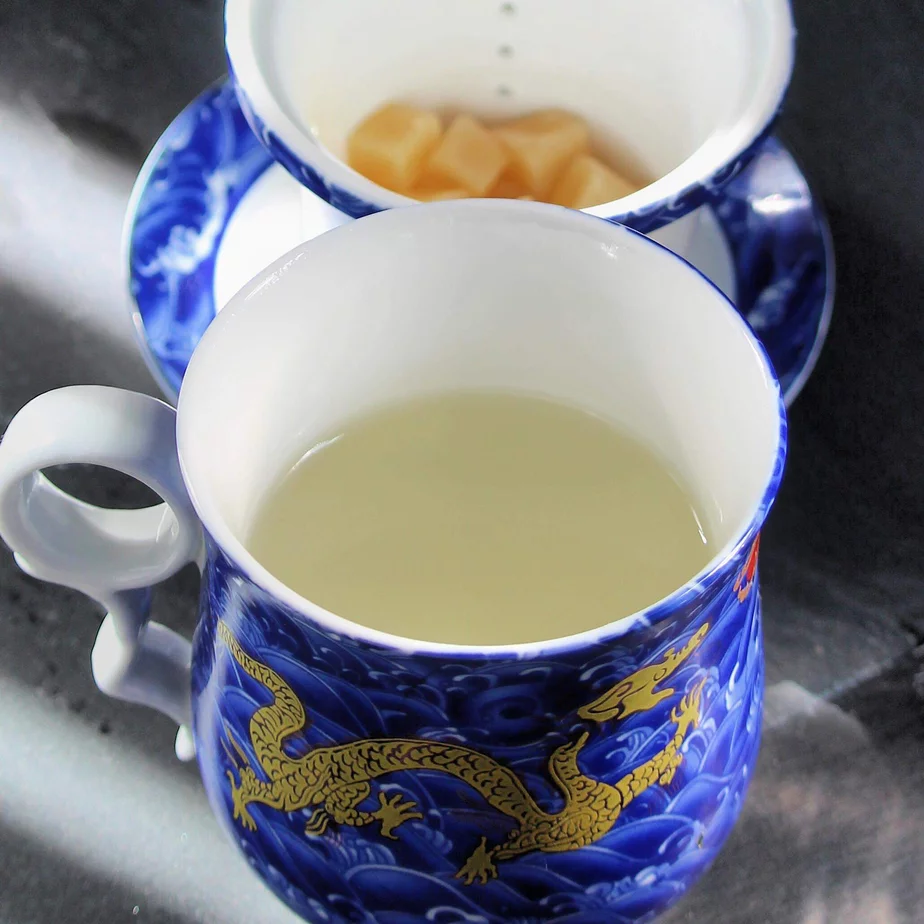

Boiled water

Description
It's finally here! The one and only way how to prepare a water, that is boiling!
This never-seen-before classic has finally arrived nowhere! Here's how to get your paws on some of it.
Ingredients:
- water
- sandwich
- 200ml carton drink packages bought in bulk
Steps:
- Create a cast pickaxe head.
- Combine it with a wooden stick to create a handle.
- Go outside and start mining for a water well.
- Take regular brakes and consume your government-provided food, sandwaches and softdrinks, for nutrition.
- Once you acquire water from a well, use your electrical water boiler in your kitchen to boil it in about a minute.
Back to index